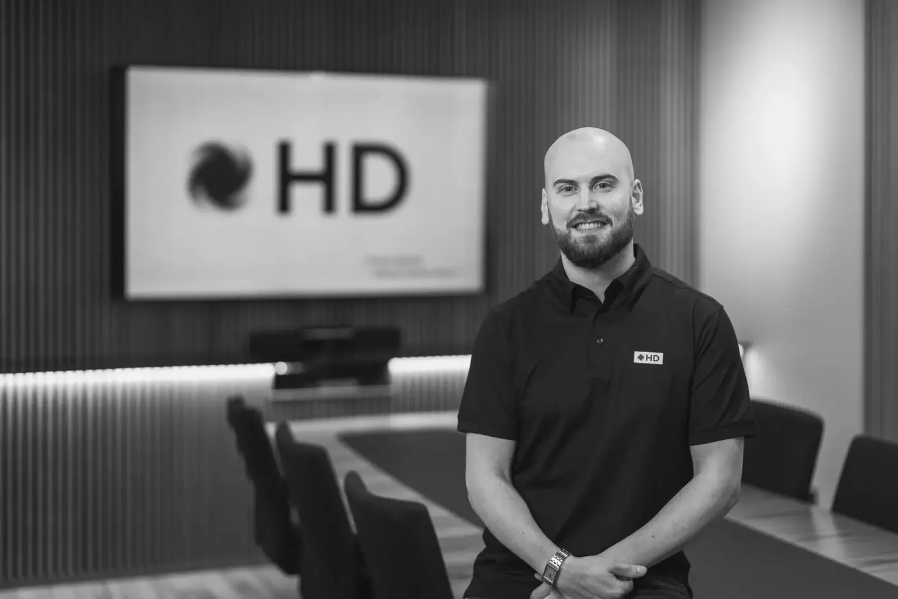
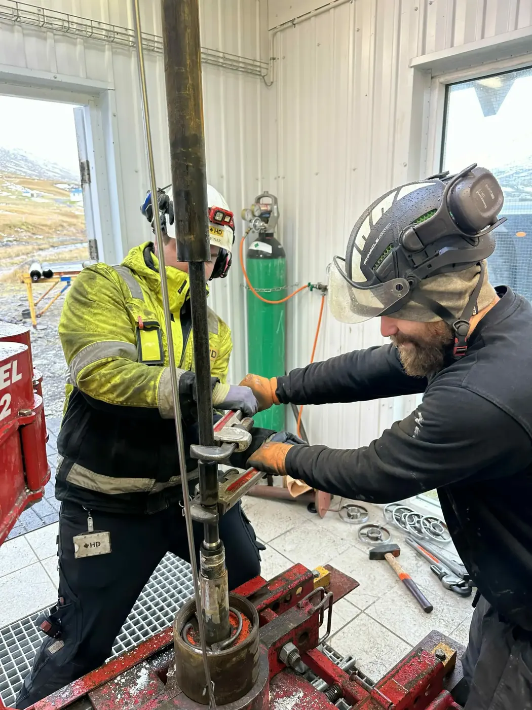
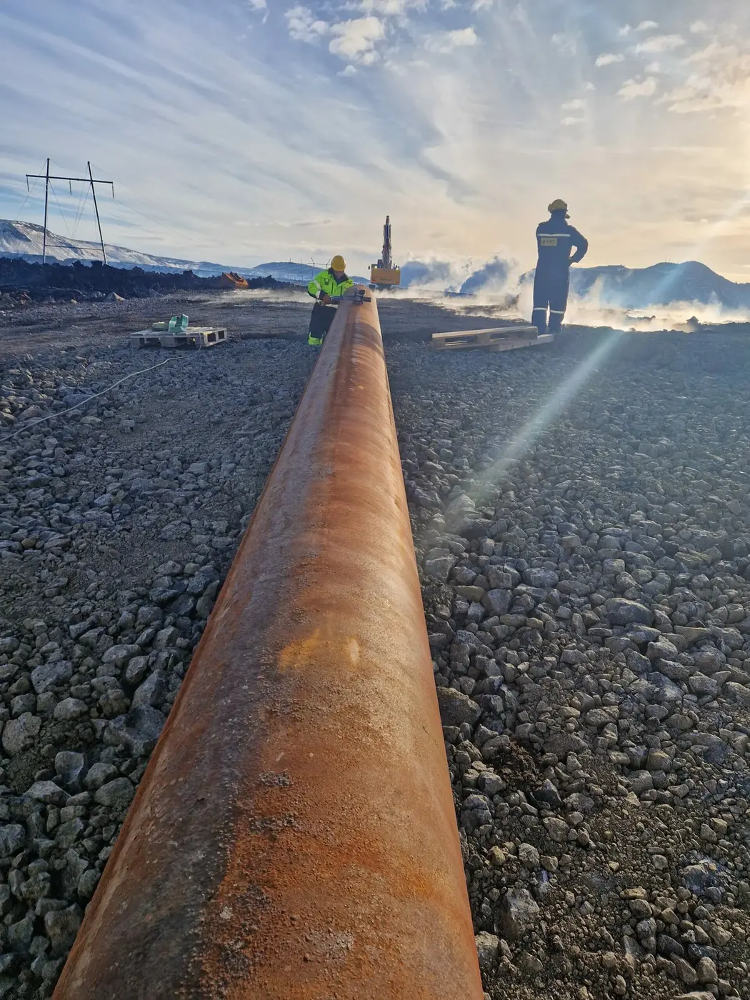

Þegar rekstraröryggi skiptir öllu geta bilanir í lykilbúnaði haft verulegar afleiðingar. Bilun í heitavatnsdælu er ekki aðeins tæknilegt vandamál heldur getur hún valdið því að það frjósi í lögnum, með tilheyrandi heitavatnsleysi og verulegu samfélagslegu og fjárhagslegu tjóni.
Á Fagþingi hita/vatns- og fráveitna, sem fram fer í Reykjanesbæ 7-8 maí, mun HD Iðn- og tækniþjónusta beina kastljósinu að ástandsgreiningu á djúpdælukerfum, sem mikilvægu stjórntæki í rekstri og áhættustýringu hitaveitna.

Frá árinu 1995 hefur HD komið að hönnun, smíði og rekstri um 130 djúpdæla á Íslandi sem gegna lykilhlutverki í hitaveitum og orkuframleiðslu landsins. Fyrirtækið hefur jafnframt unnið fjölda alþjóðlegra verkefna þar sem dælur hafa verið settar niður á allt að 350 metra dýpi og starfað við hitastig allt að 170°C. Þessi reynsla byggir á raunrekstri við krefjandi aðstæður þar sem öryggi og áreiðanleiki eru í forgrunni.
HD starfar ekki eingöngu sem hefðbundinn birgi á búnaði, heldur jafnframt sem tæknilegur samstarfsaðili hitaveitna í langtímarekstri. Þekking fyrirtækisins spannar alla virðiskeðjuna; frá sérsniðinni hönnun að íslenskum jarðhitaaðstæðum til niðursetningar, gangsetningar og langtímaviðhalds. Fyrirtækið leggur sérstaka áherslu á staðlaða hönnun og lausnir sem draga úr rekstraráhættu og einfalda viðhald.
Á fagþinginu kynnir HD aukna áherslu á markvissa ástandsgreiningu með mælingum og gagnagreiningu sem nýtir gervigreind. Markmiðið er ekki að bæta við tæknibúnaði heldur fyrst og fremst, að styrkja stjórn á rekstri. Með því að greina frávik tímanlega er hægt að færa viðhald úr viðbragðsdrifnu formi yfir í ástandsdrifið, draga úr óvæntum rekstrartruflunum og auka fyrirsjáanleika í fjárhagslegri áætlanagerð.
Spurningin sem HD leggur fyrir rekstraraðila hitaveitna er einföld: Hvað kostar að missa dælu í miðju kuldakasti?
„Kostnaðurinn mælist ekki bara í viðgerð eða varahlutum,“ segir Lýður Skúlason, sviðsstjóri orkusviðs HD. „Hann felst í þjónusturofi, auknum rekstrarþrýstingi, samfélagslegum áhrifum og þeirri áhættu sem fylgir því að missa stjórn á aðstæðum. Reynslan kennir okkur að það sem skiptir mestu máli er að sjá frávikin áður en þau verða að bilunum. Þar liggur raunverulegur sparnaður og rekstraröryggi.“
Á aðaldagskrá fagþingsins verður erindi frá Símoni Þór Hansen, tæknilegum ráðgjafa á búnaðarsviði HD, þar sem hann fjallar um muninn á öxuldælum og sambyggðum djúpdælum (ESP). Í erindinu verður farið yfir uppbyggingu, rekstrarskilyrði, uppsetningu og viðhald lausnanna, ásamt samanburði á stofn- og rekstrarkostnaði. Sérstök áhersla verður lögð á íslenskar aðstæður þar sem hitastig, efnafræði og dýpt setja auknar kröfur á búnað og rekstraröryggi.
Markmið erindisins er að styðja við upplýsta ákvörðunartöku við val á dælukerfum og varpa ljósi á kosti og galla hvorrar lausnar.
HD – Ástandsgreining sem stjórntæki í rekstri og viðhaldi
„Kostnaðurinn mælist ekki bara í viðgerð eða varahlutum.“ segir Lýður Skúlason, sviðsstjóri orkusviðs HD.


Fréttin birtist fyrst á hd.is.
Allar fréttir